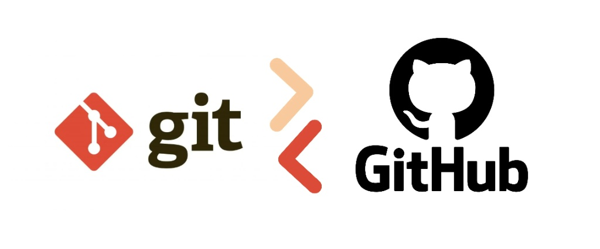

Este trabalho tem como objetivo, consolidar informações aprendidas em sala de aula sobre controle de versionamento git e sincronização com github.

Esta página html foi feita com auxílio de IA para otimização de tempo e focar no controle de versionamento. Aqui, será observado as alterações que serão apresentadas de acordo com o controle de versionamento.